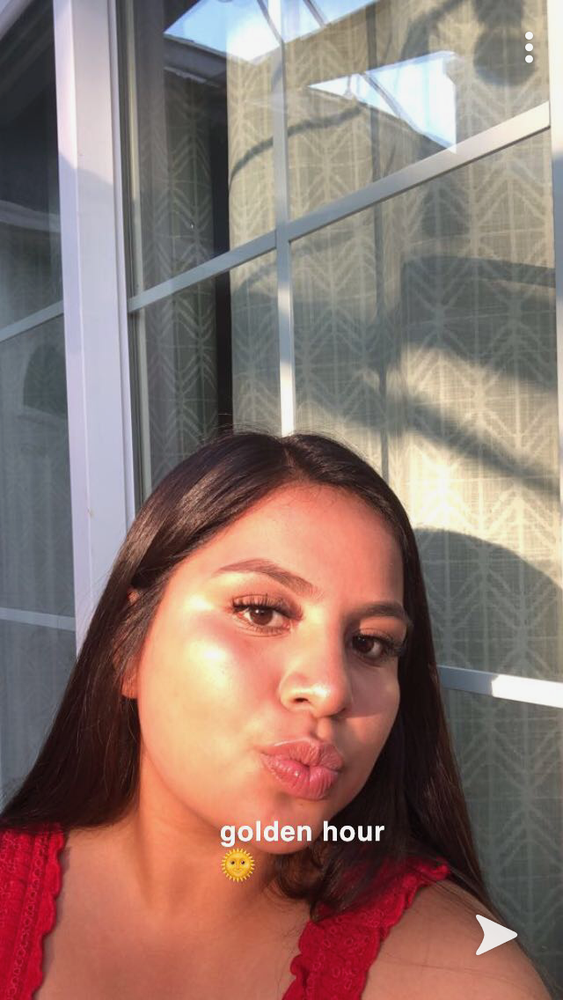

My name is Juliana Martinez-Gonzalez. But people usually call me Julie. I am currently 15 years old. Meaning I am going to enter sophmore year and I currently attend a public high school located in San Jose. At my school I am involved in many extra curriculars. For example: I joined the soccer and lacrosse team. And I also joined a club called Interact where we interact with people from other schools while doing community service.
I am also a very artistic person. When I was younger I used to dance tap dance, but then I later moved on to Folklorico. I have been dancing folklorico for 10 years. I really like to draw too. Mostly trees, because trees are unique, and there are different ways to draw them.
